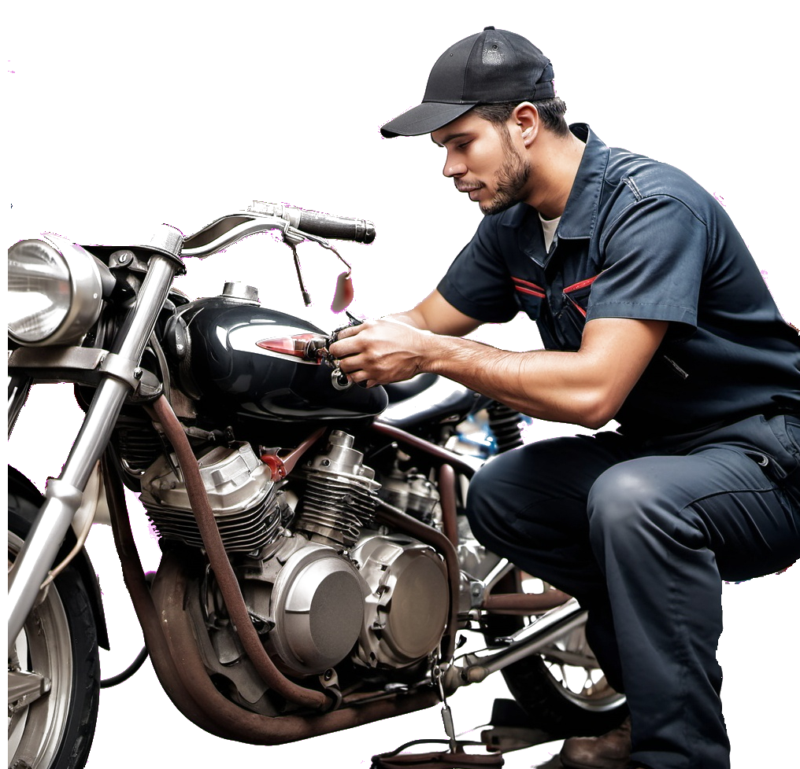

Twój samochód uległ awarii? Nie ryzykuj. Zaufaj doświadczonym specjalistom.
Doświadczony zespół
Mamy długie doświadczenie w naprawach samochodów.
Przyjazny personel
Pracujemy po to, aby Ci pomóc. Zawsze z uśmiechem.
Szeroki wybór części
Oferujemy oryginalne części oraz wysokiej jakości zamienniki.
Szanujemy Twój czas
Zrobimy wszystko, aby samochód wrócił do Ciebie szybko.
Szeroki zakres usług serwisowych
W naszym serwisie oferujemy pełny zakres usług. Dzięki temu zyskujesz pewność,
że w jednym miejscu dokonasz wszystkich niezbędnych napraw czy przeglądów.
Przeglądy eksploatacyjne
Usługi diagnostyczne
Naprawy silników
Naprawy zawieszenia
Geometria kół
Wymiana opon
Przeglądy eksploatacyjne
Usługi diagnostyczne
Naprawy silników
Naprawy zawieszenia
Geometria kół
Wymiana opon

Umów się na serwis!Zadzwoń do nastel. 999 999 999
Twój samochód odmówił posłuszeństwa? Potrzebujesz szybkiej i sprawnej naprawy, która nie zrujnuje
Twojego portfela? Dobry mechanik samochodowy Katowice wydaje Ci się trudny do znalezienia? Na szczęście
nie musisz już szukać dalej – jesteśmy przekonani, że po zapoznaniu się
z naszą ofertą znajdziesz usługę odpowiadającą Twoim wymaganiom. Co nas wyróżnia?
Godny polecenia warsztat samochodowy Katowice – czyli jaki?
Jaki powinien być dobry mechanik samochodowy Katowice? Wielu odpowie, że tani.
Oczywiście jest to istotny aspekt działalności – nikt nie lubi przepłacać za usługę,
albo rezygnować z niezbędnych wymian i napraw w obawie o zbyt wysokie koszta. Z drugiej
jednak strony nie zawsze najtańsze oferty cechują się wysokimi standardami pracy. A przecież
od sprawności naszego samochodu może nawet zależeć zdrowie i życie – nie tylko nasze, ale
również pasażerów i innych uczestników ruchu. Dlatego kolejnym ważnym aspektem, który należy
wziąć pod uwagę, oprócz atrakcyjnej ceny, jest profesjonalizm i przestrzeganie wysokich norm
jakościowych. Wiele osób jako istotną cechę wymieni również umiejętność słuchania i reagowania
na potrzeby klientów – zbyt wielu mechaników nie przywiązuje wagi do relacji osób oddających
samochody do naprawy i nie reaguje na ich uwagi. A przecież to właśnie od właściciela pojazdu
powinno najwięcej zależeć.
Mechanik samochodowy Katowice, którego warto polecić, powinien również stale się doszkalać i
uzupełniać wiedzę wraz ze zmianami zachodzącymi w motoryzacyjnym świecie. Czasy, kiedy do
większości napraw wystarczało kilka kompletów kluczy i podstawowa aparatura diagnostyczna,
dawno minęły – dzisiaj, by zdiagnozować większość modeli na rynku, potrzebna jest specjalistyczna
aparatura diagnostyczna, ale również duża wiedza i doświadczenie.
Dlaczego właśnie na nas powinieneś postawić?
Omówiliśmy, jaki powinien być mechanik samochodowy Katowice, na którego warto postawić. Dlaczego jesteśmy przekonani, że powinieneś właśnie nam powierzyć swój samochód? Ponieważ my:
mamy świetnie wyposażony warsztat, bogaty w najnowocześniejsze rozwiązania diagnostyczne, autoryzowane przez największych producentów samochodów na świecie,
stawiamy na szkolenia i rozwój – nasi pracownicy stale są wysyłani na kursy doszkalające, gdzie poszerzają swoją wiedzę i uczą się korzystać z najnowocześniejszych narzędzi,
wsłuchujemy się w potrzeby i opinie naszych klientów – wszystko zależy więc od Ciebie,
dokładamy starań, by oferować najbardziej efektywne kosztowo rozwiązania – dzięki czemu możesz mieć pewność, że nie przepłacisz.
dysponujemy doświadczoną załogą, zdolną szybko i skutecznie zdiagnozować i naprawić większość usterek.
Jesteśmy pewni, że jeśli powierzysz nam swój samochód, to będziesz zaskoczony jakością
wykonanej pracy, tym, jak szybko będzie on gotowy do odbioru, przystępną ceną i miłą obsługą.
Jesteśmy przekonani, że wkrótce Ty sam zaczniesz dzielić się ze znajomymi pozytywnymi wrażeniami
ze współpracy z nami. Nie mamy wątpliwości, że zostaniesz naszym nowym stałym klientem. Po prostu
nas sprawdź!
Dobry warsztat i mechanik samochodowy Katowice
Chyba każdy kierowca wie, że dobry mechanik samochodowy Katowice jest na wagę złota.
Nie tylko pomoże szybko uporać się z pojawiającymi się usterkami, ale również wskaże
newralgiczne punkty, na które trzeba zwrócić szczególną uwagę i zaproponuje stosowne
działania profilaktyczne. Zaufany mechanik samochodowy Katowice przygotuje Twoje auto
zarówno do dalekich podróży, jak i do codziennej jazdy w miejskiej dżungli, podczas której
będzie ono narażone na niemałe wyzwania. Dlatego nie ma miejsca na eksperymenty – potrzebny
Ci dobry warsztat samochodowy Katowice – taki jak my! Skorzystaj z naszych usług i przekonaj
się, jak wiele możesz zyskać. Nigdy więcej nie obawiaj się o stan swojego auta i z zadowoleniem
przekręcaj kluczyk przed kolejną podróżą – niezależnie czy będzie ona do najbliższego sklepu,
czy na drugi koniec kontynentu. Nasz warsztat samochodowy Katowice zrobi wszystko, byś dojechał
bez obaw.
Dobry mechanik samochodowy Katowice – to my!
Choć wiele osób deklaruje, że zna się na mechanice samochodowej i jest w stanie
profesjonalnie obsłużyć Twój pojazd, to oddając samochód w nasze ręce, zyskujesz coś ekstra.
Dlaczego? Ponieważ jesteśmy maniakami motoryzacji, a nasi fachowcy bezustannie poszerzają
swoją wiedzę i robią wszystko, co tylko możliwe, by być na bieżąco z rozwiązaniami
stosowanymi we współczesnych samochodach – wykorzystywanymi komputerami, narzędziami
diagnostycznymi, słabymi punktami oferowanych pojazdów czy „trikami”, na które decydują
się producenci aut. A pracujący u nas elektryk samochodowy poradzi sobie ze
zlokalizowaniem każdej usterki. Dobry warsztat samochodowy Katowice to taki,
w którym Twój samochód zostanie poddany kompleksowej analizie i znalezione zostaną
wszystkie miejsca wymagające interwencji, lub mogące zawieźć w dającej się
przewidzieć przyszłości – czyli dokładnie taki, jak nasz! Obsługujemy samochody
wszystkim marek i skupiamy się nie tylko na najnowszych modelach, ale potrafimy
również fachowo pomóc przy youngtimerach, a nawet nieco starszych konstrukcjach.
Jedno jest pewne – jeśli potrzebna Ci fachowa pomoc, to możesz na nas liczyć!